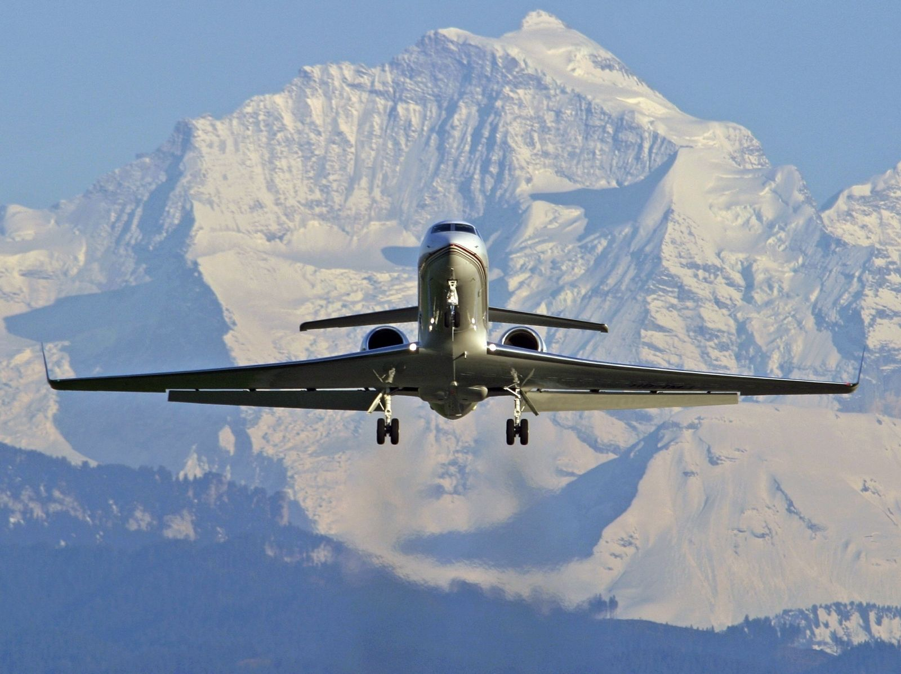
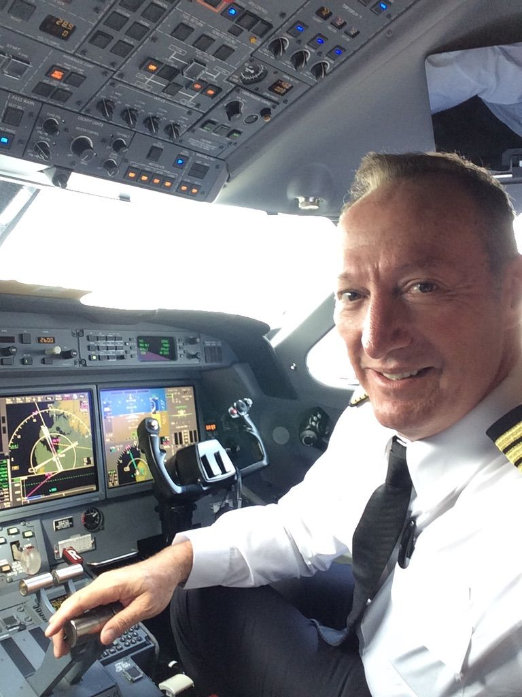
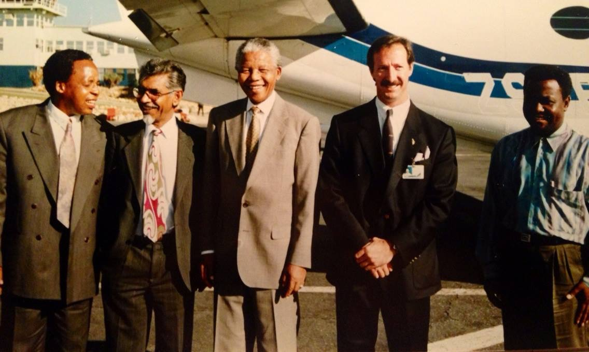
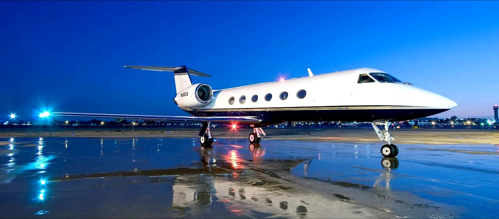

Aviation / Cockpit
Inside the world of billionaire jets, FedEx and Gulfstreams
Peter sits down with Basham Johnson, a 32-year veteran with 13 type ratings, to talk about what actually separates flying for one private client from flying cargo for a global carrier, and the chief-pilot culture behind ultra-high-end corporate aviation.

Basham Johnson has been flying for 32 years and currently holds 13 type ratings, the kind of range that spans a Boeing 747-400 at one end and a Citation 500 down at the other. In between: the MD-11, the 767 and 757, the Gulfstream 4, the Falcon 2000 and the three-engine Falcon 900, the Dornier 328 commuter turboprop, the Gulfstream 200, 280 and 150, nearly every Citation variant built, and, these days, the Piaggio P180 Avanti, an Italian twin turboprop with its engine mounted as a rear-facing pusher. The Avanti cruises at 390 knots on 105 gallons an hour at 41,000 feet, carries a cabin cross-section bigger than most light jets, and is certified for single-pilot operation under Part 91.
He did not come up through the military. Every rating, CFI, instrument instructor, multi-engine instructor, was earned the civilian route, one qualification at a time, building hours as a flight instructor before working up through commuter turboprops and into business jets.
Cost centre, profit centre
The two of them have flown together for years, on and off, across two very different worlds of aviation: single-client corporate operations and, in Basham's case now, cargo flying as a Boeing 767 captain for FedEx. The distinction, Basham says, comes down to what an airplane is worth to the business that owns it.
An airline or cargo pilot is a profit centre. What they do directly generates revenue, on a fixed hub-and-spoke pattern, the same 25 or 50 airports on rotation. A corporate pilot flying one aircraft for one client is a cost centre: harder to tie to a line on a balance sheet, and, because the arrangement only lasts as long as the client or the client's business does, rarely a career that runs the 35 or 40 years an airline job can. The variety cuts the other way. Fly for a single principal and the question every morning is genuinely "where are we going today," a route that might be Kenya out of Moscow one week and somewhere else entirely the next. Fly for a carrier, and you are responsible for getting the airplane from A to B. It is someone else's problem once you walk off it. Run one aircraft for one client, and it is yours: how it looks, how it flies, its whole condition, all the time.
FedEx's own operation runs on a straightforward baseline: a six-hour minimum guaranteed pay per duty day, whether flying or resting on layover, with extra pay kicking in on longer duty days built around 12 to 14 hour flights. Basham, based in Oakland but flying almost entirely into Asia, describes a Boeing 777 rotation that can run Memphis to Tokyo, then Dubai, then somewhere in Europe, then Newark, then back to Memphis, a full circuit of the globe on one continuous roster. It is the kind of stability, pension and long-term structure that a single-aircraft corporate job, by its nature, usually cannot offer.

Chief pilot
Years earlier, Peter brought Basham onto a private operation running two Gulfstreams for a single high-net-worth client, restructured the crew, and made Basham chief pilot of the G4. The client's own operating philosophy set the tone for the whole team, delivered to Peter directly when he took the job.
"Time is a big critical factor for me. If you're 10 minutes late, do the math."
To Peter, being chief pilot was never about rank. It meant being what he calls a mission specialist: someone who does not need to be managed through a problem, who is simply trusted to solve it. Send Basham to fly a G4 from Moscow to Kenya on marginal fuel numbers, and the answer was never a request for instructions, it was "done."
It was in those early days flying together that Basham first learned about Peter's own résumé. Mid-conversation, almost in passing, Peter mentioned he had once flown Nelson Mandela.

For Basham, it settled any doubt about the operation he had just joined: the crew, the aircraft, the standard, all of it was exactly as advertised. It is also the kind of credential that sits quietly behind Peter's whole career: two decades as an intercontinental Gulfstream captain, most of it spent, as Basham puts it from the other side of the cockpit door, with someone who has never once complained about a bad day in the air.
Cleared in hot to Moscow
Basham's own operation flew almost exclusively Western pilots, with the rare exception of a Russian navigator brought in for specific flights over Siberia. He rates Russian pilots highly regardless, describing them as unusually skilled hands-on flyers purely from the volume of genuinely bad-weather operations they fly into on a normal week. On one occasion he flew Vladimir Putin himself to Syktyvkar, working with a Russian co-pilot for the trip, a job he mentions matter-of-factly rather than as the headline of his career.
The tightest margin he can remember started in Harare, on a return leg to Moscow that had a hard cutoff: the flight needed to cross into Turkish airspace by a specific time to secure its onward clearance into Russia. A fuel stop in Nairobi turned into a full ground stop when a Kenyan 737 landed long, locked its brakes, blew all four tyres, and sat stranded in the last stretch of a runway well over 12,000 feet long. With the clock already running, Basham asked Kenyan air traffic control for an intersection departure, reasoning that a Gulfstream needed nowhere near the full runway length the disabled airliner was blocking. Controllers agreed. Airborne again but still short on time, the crew pushed toward the Turkish boundary while air traffic control on the radio kept telling them they wouldn't make the window and Basham kept answering that they were coming anyway. At the boundary itself, with no clearance yet through, Basham turned to the aircraft's owner in the cabin and asked whether he had any influence he could call in. The owner made one phone call. The aircraft was cleared in hot to Moscow. By the time they landed, the crew had logged something close to 12 or 13 hours of flying on a single duty day, most of a full day spent crossing from southern Africa to Russia in one continuous push.

"I'll tell anybody in the world, I've never had a bad day in an airplane."